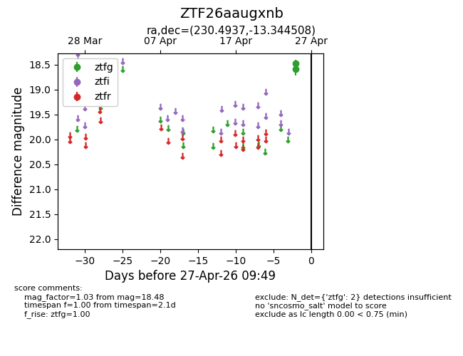
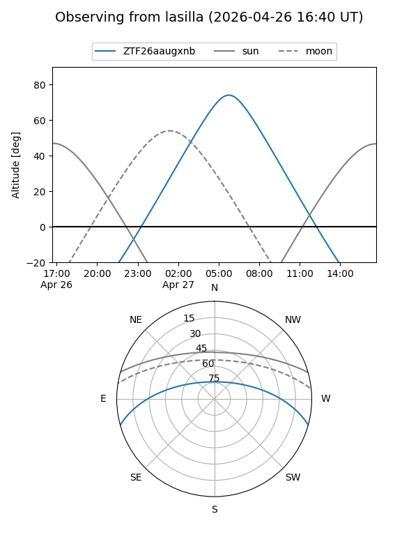
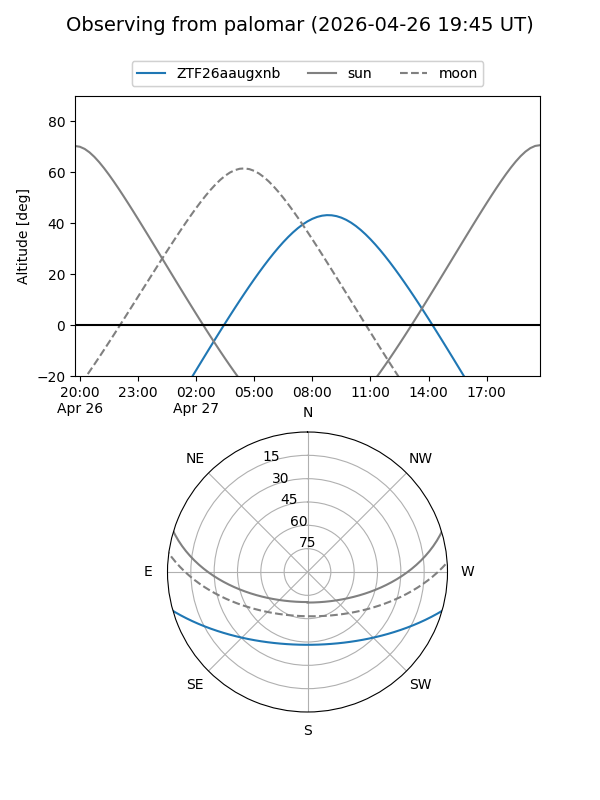

ZTF26aaugxnb
Target ZTF26aaugxnb at 2026-04-27 09:50
Aliases and brokers:
FINK: link
Lasair: link
ALeRCE: link
alt names
ZTF26aaugxnb (ztf,fink_ztf)
Coordinates:
equatorial (ra, dec) = 230.4937,-13.34451
equatorial (HMS+DMS) = 15:21:58.50,-13:20:40.23
galactic (l, b) = (349.7913,+35.48783)
Flags:
Photometry:
last ztfg=18.48
2 ztfg detections
Lightcurve

Visibility


Additional plots